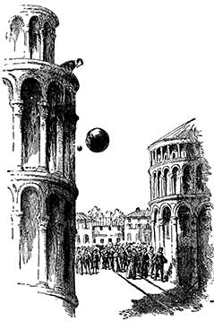

Galileo Galilei
Galileo Galilei
 Galileo's contributions to math and science include the law of falling bodies and the parabolic path of projectiles. Outside the time he spent studying astronomy, he was able to make discoveries in physics. Much of his studies related to motion and acceleration. One popular experiment that Galileo was said to have done was dropping two different differently weighted objects off of the Leaning Tower of Pisa. By this experiment he was able to determine that the rate at which objects fall is not related to their weight but by the way in which the object is affected by air friction.
Galileo also made discoveries contradicting Aristotle. One was the reason why objects float, a theory which he explains in his book, Discourse on Bodies in Water. Another one of Aristotle's beliefs that Galileo contradicted was the idea that the sun is perfect. Galileo was able to prove that the sun was indeed not perfect and had spots on it. In spite of Galileo's contradictions of previously believed ideas, he explained that his theories did not contradict the Bible at all, even though the Church claimed that some of Galileo's theories and beliefs were heresy. Despite all of the obstacles that Galileo faced in his lifetime, he was able to make many discoveries that impacted science and many beliefs of that time and the years after.